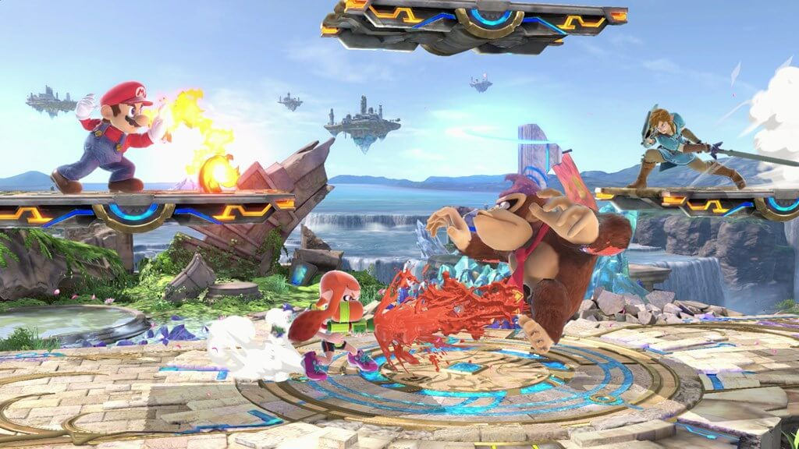

Some new players have trouble improving at first. Here is some information to set you on the right track to becoming a better player!
The first thing a player should focus on is the movement of their own character. Once you feel comfortable controlling your character, then you will be able to learn more efficiently about the game. Try going into the Training mode, or fighting against easy computer opponents. Do your own experimenting to figure out attributes of your character such as: their speed, height of their jumps, and how far their recovery back to the stage can go!
Here are some terms that you should be familiarized with:
- Nuetral
- The part of a match when both players have eaqual position
- Advantage/Disadvantage
- When one player has a better/worse position compared to the other player
- Spacing
- Moving your character and using attacks at a certain range
- Punish
- Hitting your opponent after they make a mistake, or a missed attack